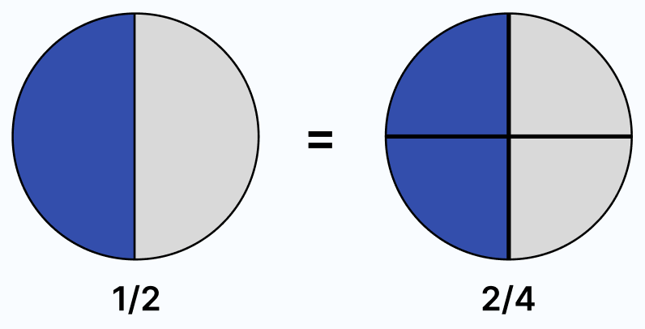

Fracciones equivalentes
¿Qué son las fracciones equivalentes?
Las fracciones equivalentes son aquellas que representan la misma cantidad, aunque sus numeradores y denominadores sean diferentes.
Imagina que tienes una pizza entera. Si la cortas en 2 partes iguales, cada parte es 1/2. Pero si la cortas en 4 partes iguales, dos de esas partes serían 2/4.
Aunque los números cambien, siguen representando la misma cantidad de pizza. Las fracciones equivalentes son fracciones que se ven distintas, pero valen lo mismo.
Ejemplo
1/2 significa que tienes una de dos partes iguales.
2/4 significa que tienes dos de cuatro partes iguales.
Si comparas las dos situaciones, ¡tienes la misma cantidad! Por eso 1/2 y 2/4 son equivalentes.
¿Cómo puedo saber si dos fracciones son equivalentes?
Puedes multiplicar o dividir el numerador (el número de arriba) y el denominador (el número de abajo) por el mismo número.
Si a 1/2 le multiplicas arriba y abajo por 3:
1x3 / 2x3 = 3/6
¡Entonces 1/2 es equivalente a 3/6!
Si tienes 4/8 y divides arriba y abajo entre 4:
4/4 / 8/4 = 1/2
¡Así vemos que 4/8 también es equivalente a 1/2!
O puedes hacer dibujos, como barras o círculos divididos en partes, para ver si representan la misma cantidad.
Si los dibujos ocupan lo mismo, las fracciones son equivalentes.
¿Por qué es importante saber esto?
Entender las fracciones equivalentes te ayuda a:
- Comparar fracciones.
- Sumar y restar fracciones más fácilmente.
- Resolver problemas sin confundirte.
Aunque las fracciones se vean diferentes, algunas valen exactamente lo mismo. Solo tienes que descubrir qué fracciones representan la misma cantidad, ¡y tú puedes hacerlo!